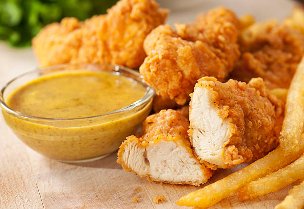

Fried Chicken Tenders

Ingredients:
- 1 cup all-purpose flour
- 2 large eggs, beaten
- 2 tablespoons water
- 2 cups Italian-style seasoned bread crumbs
- ½ teaspoon ground black pepper
- ½ teaspoon cayenne pepper
- 24 chicken tenderloins
- 2 quarts oil for frying
Dipping Sauce:
- 1 cup mayonnaise
- ½ cup sour cream
- 3 tablespoons prepared horseradish
- 3 tablespoons prepared mustard
- 1 dash Worcestershire sauce
Instructions:
- Prepare the breading station: Place flour in a shallow bowl. Place eggs and water in a second shallow bowl. Place bread crumbs in a third shallow bowl, and mix in ground black pepper and cayenne pepper.
- Coat chicken in flour, then eggs, and then bread crumbs, one piece at a time, and set aside.
- Heat oil in a deep fryer to 375 degrees F (190 degrees C).
- Fry chicken in small batches until the pieces are golden brown, 6 to 8 minutes. Remove chicken to drain on paper towels or a wire rack.
- Make the dipping sauce: Combine mayonnaise, sour cream, horseradish, mustard, and Worcestershire sauce in a small bowl. Mix well, and serve with chicken.